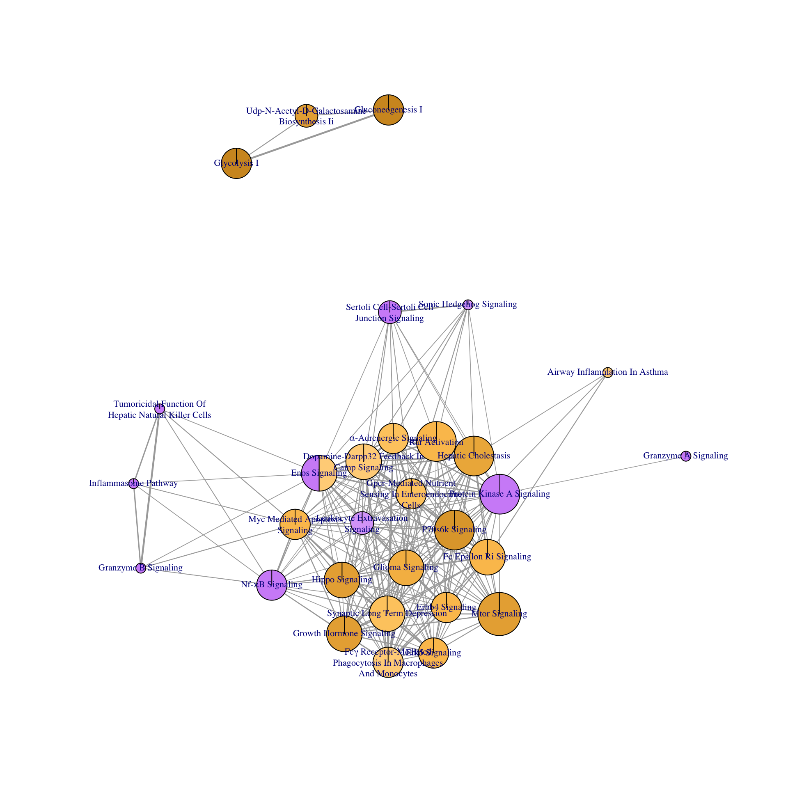
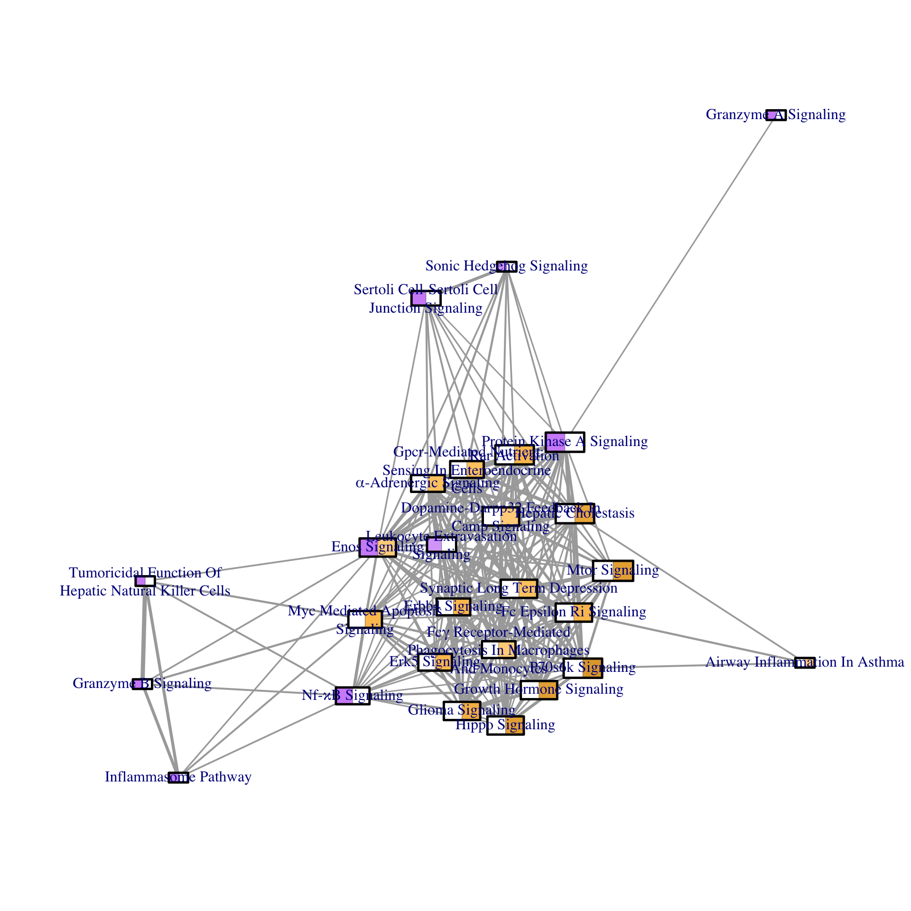
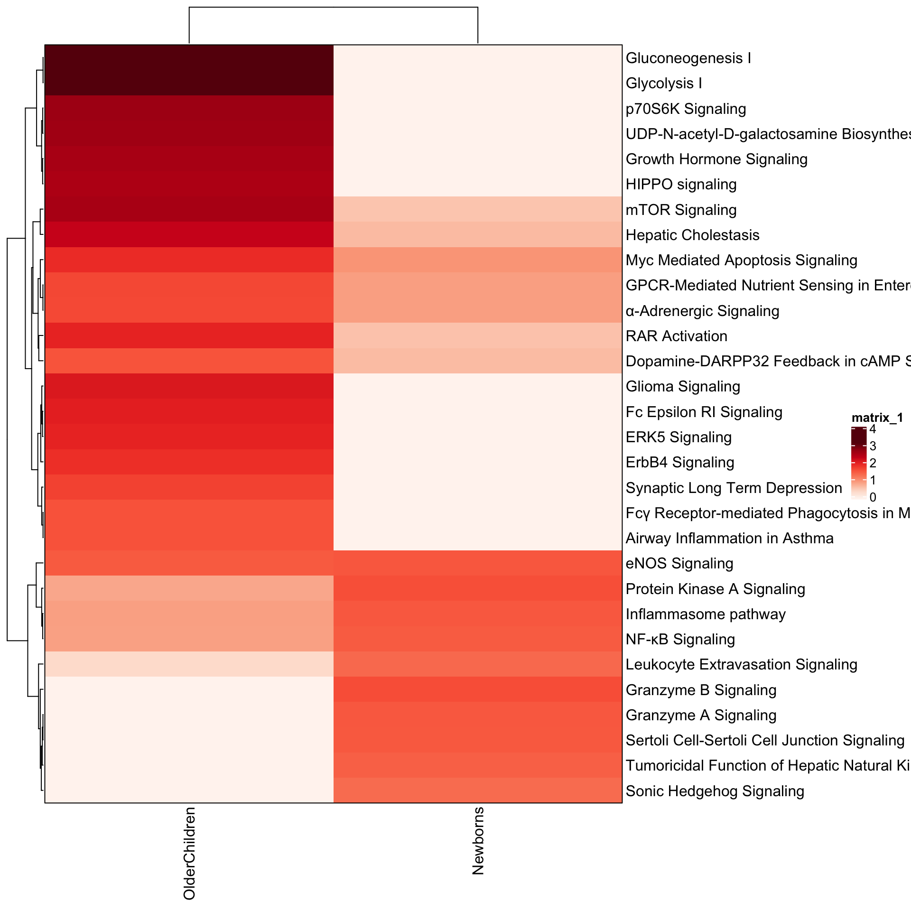
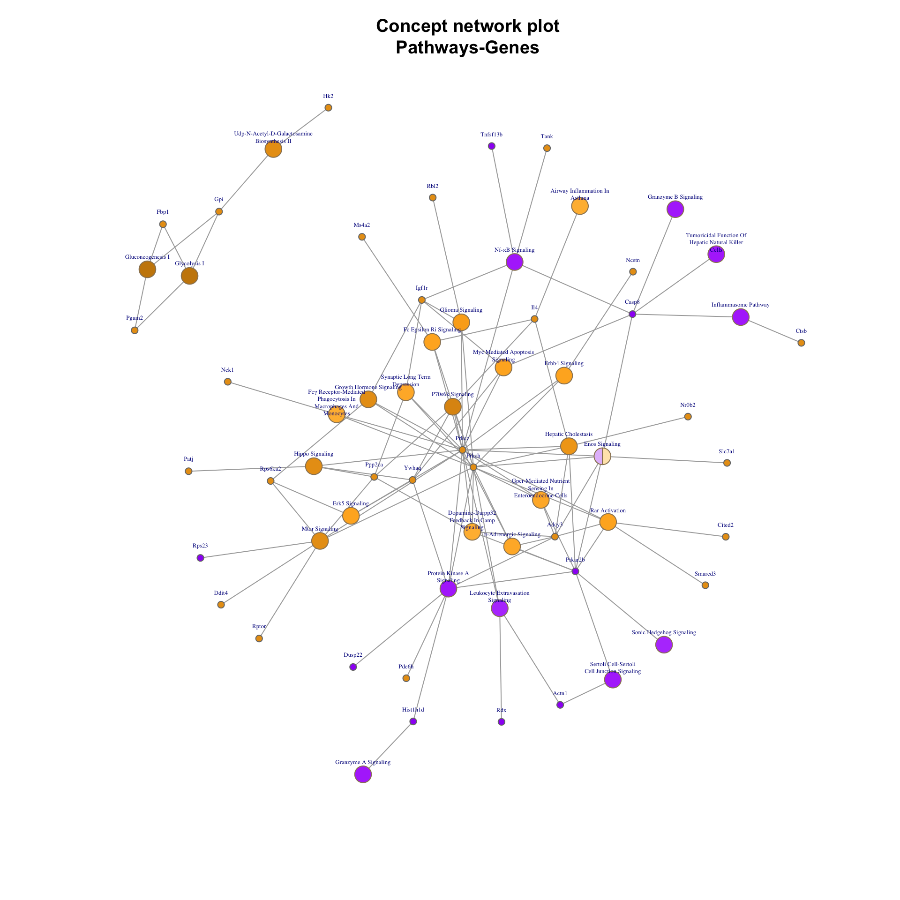
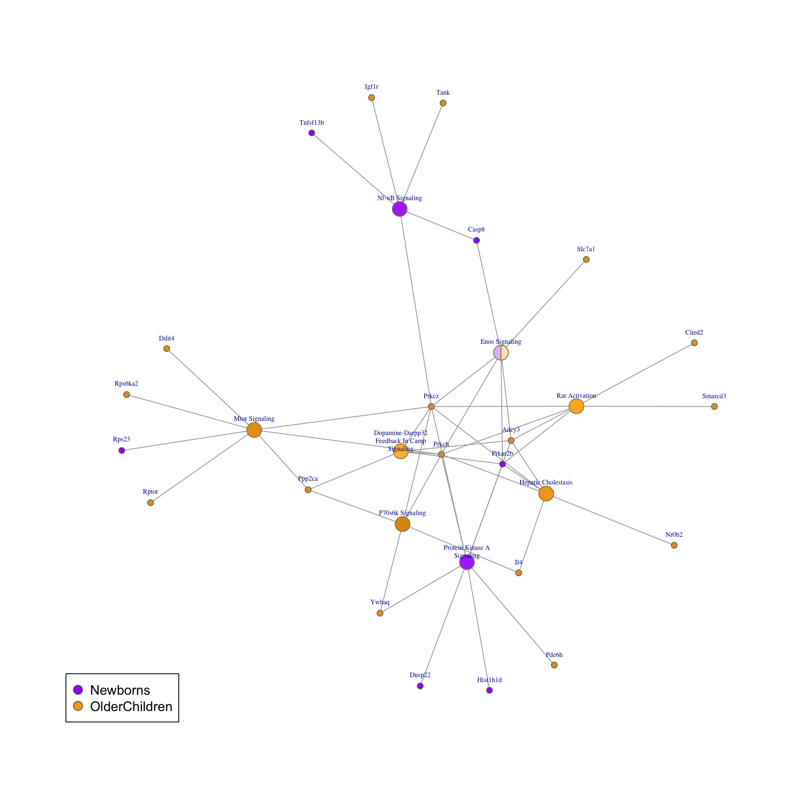

library(multienrichjam);
library(jamba);
library(colorjam);
library(ComplexHeatmap);
#> Loading required package: grid
#> ========================================
#> ComplexHeatmap version 1.99.5
#> Bioconductor page: http://bioconductor.org/packages/ComplexHeatmap/
#> Github page: https://github.com/jokergoo/ComplexHeatmap
#> Documentation: http://jokergoo.github.io/ComplexHeatmap-reference
#>
#> If you use it in published research, please cite:
#> Gu, Z. Complex heatmaps reveal patterns and correlations in multidimensional
#> genomic data. Bioinformatics 2016.
#> ========================================
#>
#> This version is a major update of the package. The major new features are:
#>
#> 1. Support splitting heatmaps by columns.
#> 2. Support concatenating heatmaps/annotations vertically.
#> 3. Provide more types of heatmap annotations.
#> 4. Support UpSet plot.
#>
#> Note this version is not 100% compatible with the older versions (< 1.99.0).
#> Please check by `vignette('difference_to_old_versions', package = 'ComplexHeatmap')`.
#>
#> Above messages will be removed in the future.
options("stringsAsFactors"=FALSE);
knitr::opts_chunk$set(
fig.height=10,
fig.width=10,
fig.align="center"
)Import and use Ingenuity IPA enrichment data
This document describes steps recommended for using Ingenuity IPA enrichment data.
Ingenuity IPA enrichment data can be exported using a function "Export All" which by default creates one text file, concatenating each enrichment table into one large file.
This workflow demonstrates the import process using two IPA enrichment files used by Reese et al 2019 https://doi.org/10.1016/j.jaci.2018.11.043 to compare enrichment results in newborns to older children.
It therefore requires IPA enrichment results have already been exported in text format from IPA.
Import IPA data from text files
To import an IPA text file, use importIPAenrichment():
newborn_txt <- system.file("extdata",
"Newborns-IPA.txt",
package="multienrichjam");
newborn_dfl <- importIPAenrichment(newborn_txt);
#> Warning in curateIPAcolnames(jDF, ipaNameGrep = ipaNameGrep, geneGrep =
#> geneGrep, : NAs introduced by coercionThe result is a list of data.frame objects, where each data.frame represents one enrichment test. A convenient way to see the dimensions of each data.frame is with the function jamba::sdim():
sdim(newborn_dfl);
#> rows cols class
#> Canonical Pathways 113 7 data.frame
#> Upstream Regulators 117 13 data.frame
#> Diseases and Bio Functions 444 11 data.frame
#> Tox Functions 15 11 data.frame
#> Networks 8 7 data.frame
#> My Lists 0 6 data.frame
#> Tox Lists 19 6 data.frame
#> My Pathways 42 6 data.frameFor MultiEnrichMap, we typically want to analyze multiple IPA enrichment files, so we can wrap the call in an lapply() function:
newborn_txt <- system.file("extdata",
"Newborns-IPA.txt",
package="multienrichjam");
olderchildren_txt <- system.file("extdata",
"OlderChildren-IPA.txt",
package="multienrichjam");
ipa_files <- c(Newborns=newborn_txt,
OlderChildren=olderchildren_txt)
ipa_l <- lapply(ipa_files, importIPAenrichment);
#> Warning in curateIPAcolnames(jDF, ipaNameGrep = ipaNameGrep, geneGrep =
#> geneGrep, : NAs introduced by coercion
#> Warning in curateIPAcolnames(jDF, ipaNameGrep = ipaNameGrep, geneGrep =
#> geneGrep, : NAs introduced by coercionNow we can check the dimensions within each list using jamba::ssdim():
ssdim(ipa_l);
#> $Newborns
#> rows cols class
#> Canonical Pathways 113 7 data.frame
#> Upstream Regulators 117 13 data.frame
#> Diseases and Bio Functions 444 11 data.frame
#> Tox Functions 15 11 data.frame
#> Networks 8 7 data.frame
#> My Lists 0 6 data.frame
#> Tox Lists 19 6 data.frame
#> My Pathways 42 6 data.frame
#>
#> $OlderChildren
#> rows cols class
#> Canonical Pathways 237 7 data.frame
#> Upstream Regulators 338 13 data.frame
#> Diseases and Bio Functions 500 11 data.frame
#> Tox Functions 118 11 data.frame
#> Networks 10 7 data.frame
#> My Lists 0 6 data.frame
#> Tox Lists 36 6 data.frame
#> My Pathways 163 6 data.frameIn most cases, each IPA file should contain the same enrichment tests, for example "Canonical Pathways", "Upstream Regulators", "Diseases and Bio Functions", etc. However, it is not always the case, so it is recommended to check and verify each IPA file contains at least the enrichment tests needed for downstream analysis.
Analyze IPA enrichments from one enrichment test
IPA performs multiple enrichment tests, which are done independently and with unique assumptions and caveats. Therefore, I recommend using one enrichment test at a time in MultiEnrichMap.
Extract one data.frame from each result:
## Take only the Ingenuity Canonical Pathways
enrichList_canonical <- lapply(ipa_l, function(i){
i[["Canonical Pathways"]];
});
sdim(enrichList_canonical);
#> rows cols class
#> Newborns 113 7 data.frame
#> OlderChildren 237 7 data.frame
## Convert data.frame to enrichResult
## multienrichjam::enrichDF2enrichResult
er_canonical <- lapply(enrichList_canonical, function(i){
enrichDF2enrichResult(i,
keyColname="Name",
pvalueColname="P-value",
geneColname="geneNames",
geneRatioColname="Ratio",
pvalueCutoff=1)
});
sdim(er_canonical);
#> rows cols class
#> Newborns 113 10 enrichResult
#> OlderChildren 237 10 enrichResult
print(head(as.data.frame(er_canonical[[1]])));
#> ID
#> 1 Role of Macrophages, Fibroblasts and Endothelial Cells in Rheumatoid Arthritis
#> 2 Neuroinflammation Signaling Pathway
#> 3 Sirtuin Signaling Pathway
#> 4 G-Protein Coupled Receptor Signaling
#> 5 Protein Ubiquitination Pathway
#> 6 Signaling by Rho Family GTPases
#> Ingenuity Canonical Pathways
#> 1 Role of Macrophages, Fibroblasts and Endothelial Cells in Rheumatoid Arthritis
#> 2 Neuroinflammation Signaling Pathway
#> 3 Sirtuin Signaling Pathway
#> 4 G-Protein Coupled Receptor Signaling
#> 5 Protein Ubiquitination Pathway
#> 6 Signaling by Rho Family GTPases
#> -log(p-value) zScore GeneRatio geneID pvalue p.adjust Count
#> 1 0.405 NaN 0.00321 TNFSF13B 0.3935501 0.3935501 1
#> 2 0.406 NaN 0.00322 CASP8 0.3926449 0.3926449 1
#> 3 0.428 NaN 0.00344 HIST1H1D 0.3732502 0.3732502 1
#> 4 0.447 NaN 0.00362 PRKAR2B 0.3572728 0.3572728 1
#> 5 0.461 NaN 0.00377 TAP2 0.3459394 0.3459394 1
#> 6 0.478 NaN 0.00397 RDX 0.3326596 0.3326596 1
#> setSize
#> 1 311.5265
#> 2 310.5590
#> 3 290.6977
#> 4 276.2431
#> 5 265.2520
#> 6 251.8892run multiEnrichMap()
Now given a list of data.frame results, we can run multiEnrichMap():
mem_canonical <- multiEnrichMap(er_canonical,
enrichBaseline=1,
cutoffRowMinP=0.05,
colorV=c("purple", "orange"),
topEnrichN=20)
#> Warning: package 'DOSE' was built under R version 3.5.2
#> Warning in all(topEnrichN): coercing argument of type 'double' to logical
#> Warning: package 'arules' was built under R version 3.5.2The output mem_canonical is a list containing various results.
sdim(mem_canonical);
#> rows cols class
#> enrichLabels 2 character
#> colorV 2 character
#> geneHitList 2 list
#> geneIM 68 2 matrix
#> geneIMcolors 68 2 matrix
#> enrichIMgeneCount 40 2 matrix
#> enrichList 2 list
#> enrichIM 30 2 matrix
#> enrichIMcolors 30 2 matrix
#> multiEnrichDF 30 12 data.frame
#> multiEnrichResult 30 13 enrichResult
#> memIM 34 30 matrix
#> multiEnrichMap 30 220 igraph
#> multiEnrichMap2 30 220 igraph
#> multiCnetPlot 64 110 igraph
#> multiCnetPlot1 64 110 igraph
#> multiCnetPlot1b 64 110 igraph
#> multiCnetPlot2 64 110 igraph
#> colnames 5 listPlot the MultiEnrichMap network
For example, we can view the “Multi Enrichment Map” itself. This network connects pathways when they meet a Jaccard overlap coefficient threshold based upon the shared genes between the pathways. The cutoff is defined in multiEnrichMap() with argument overlapThreshold=0.1.
plot(mem_canonical$multiEnrichMap2,
layout=layout_with_qfrf(repulse=3.3))
#> Warning in cbind(rankOverall, rankX): number of rows of result is not a
#> multiple of vector length (arg 2)
# vertex.shape="pie",
# vertex.size=(normScale(V(mem_canonical$multiEnrichMap2)$size)+0.3)*8,An example of some basic operations to customize the igraph plot is included below.
g <- mem_canonical$multiEnrichMap2;
plot(removeIgraphBlanks(g),
vertex.shape="pie",
vertex.size=V(g)$size*2,
vertex.label.cex=0.7,
edge.width=E(g)$width / 2,
layout=layout_with_qfrf(repulse=3.3))
#> Warning: package 'colorspace' was built under R version 3.5.2
Notice there are distinct, independent subnetworks. We can extract the largest connected subnetwork to plot.
g <- mem_canonical$multiEnrichMap2;
gc <- components(g);
## Component sizes are stored in gc$csize
## You can alternatively pull out any other component
g_sub <- subgraph(g, which(gc$membership %in% which.max(gc$csize)));
#> Warning in subgraph(g, which(gc$membership %in% which.max(gc$csize))): At
#> structural_properties.c:1984 :igraph_subgraph is deprecated from igraph
#> 0.6, use igraph_induced_subgraph instead
plot(removeIgraphBlanks(g_sub),
# vertex.size2=(normScale(V(g_sub)$size2)+1)*2,
layout=layout_with_qfrf(repulse=3.5))
#> Warning in cbind(rankOverall, rankX): number of rows of result is not a
#> multiple of vector length (arg 2)
We can polish the node labels with fixSetLabels().
plot(fixSetLabels(g_sub),
layout=layout_with_qfrf(repulse=4))
#> Warning in cbind(rankOverall, rankX): number of rows of result is not a
#> multiple of vector length (arg 2)
Plot the enrichment P-value matrix
View the combined enrichment P-value matrix:
par("mar"=c(7,20,4,2));
imageByColors(mem_canonical$enrichIMcolors,
cellnote=format(trim=TRUE, mem_canonical$enrichIM, digits=2));
Alternatively you can use the ComplexHeatmap package:
ComplexHeatmap::Heatmap(-log10(mem_canonical$enrichIM),
border=TRUE,
col=getColorRamp("Reds", n=51))
#> Warning in grid.Call(C_textBounds, as.graphicsAnnot(x$label), x$x, x$y, :
#> conversion failure on 'α-Adrenergic Signaling' in 'mbcsToSbcs': dot
#> substituted for <ce>
#> Warning in grid.Call(C_textBounds, as.graphicsAnnot(x$label), x$x, x$y, :
#> conversion failure on 'α-Adrenergic Signaling' in 'mbcsToSbcs': dot
#> substituted for <b1>
#> Warning in grid.Call(C_textBounds, as.graphicsAnnot(x$label), x$x, x$y, :
#> conversion failure on 'NF-κB Signaling' in 'mbcsToSbcs': dot substituted
#> for <ce>
#> Warning in grid.Call(C_textBounds, as.graphicsAnnot(x$label), x$x, x$y, :
#> conversion failure on 'NF-κB Signaling' in 'mbcsToSbcs': dot substituted
#> for <ba>
#> Warning in grid.Call(C_textBounds, as.graphicsAnnot(x$label), x$x, x$y, :
#> conversion failure on 'Fcγ Receptor-mediated Phagocytosis in Macrophages
#> and Monocytes' in 'mbcsToSbcs': dot substituted for <ce>
#> Warning in grid.Call(C_textBounds, as.graphicsAnnot(x$label), x$x, x$y, :
#> conversion failure on 'Fcγ Receptor-mediated Phagocytosis in Macrophages
#> and Monocytes' in 'mbcsToSbcs': dot substituted for <b3>
Plot the pathway-gene incidence matrix
We can view the pathway-gene matrix:
ComplexHeatmap::Heatmap(mem_canonical$memIM,
border=TRUE,
top_annotation=ComplexHeatmap::HeatmapAnnotation(which="column",
gp=gpar(col="black"),
Pathways=-log10(mem_canonical$enrichIM)),
col=getColorRamp("Reds"),
left_annotation=ComplexHeatmap::HeatmapAnnotation(which="row",
gp=gpar(col="black"),
Genes=mem_canonical$geneIM[rownames(mem_canonical$memIM),]),
row_names_gp=gpar(fontsize=8)
)
#> Warning in grid.Call(C_textBounds, as.graphicsAnnot(x$label), x$x, x$y, :
#> conversion failure on 'Fcγ Receptor-mediated Phagocytosis in Macrophages
#> and Monocytes' in 'mbcsToSbcs': dot substituted for <ce>
#> Warning in grid.Call(C_textBounds, as.graphicsAnnot(x$label), x$x, x$y, :
#> conversion failure on 'Fcγ Receptor-mediated Phagocytosis in Macrophages
#> and Monocytes' in 'mbcsToSbcs': dot substituted for <b3>
#> Warning in grid.Call(C_textBounds, as.graphicsAnnot(x$label), x$x, x$y, :
#> conversion failure on 'NF-κB Signaling' in 'mbcsToSbcs': dot substituted
#> for <ce>
#> Warning in grid.Call(C_textBounds, as.graphicsAnnot(x$label), x$x, x$y, :
#> conversion failure on 'NF-κB Signaling' in 'mbcsToSbcs': dot substituted
#> for <ba>
#> Warning in grid.Call(C_textBounds, as.graphicsAnnot(x$label), x$x, x$y, :
#> conversion failure on 'α-Adrenergic Signaling' in 'mbcsToSbcs': dot
#> substituted for <ce>
#> Warning in grid.Call(C_textBounds, as.graphicsAnnot(x$label), x$x, x$y, :
#> conversion failure on 'α-Adrenergic Signaling' in 'mbcsToSbcs': dot
#> substituted for <b1>
Plot the Pathway-Gene Concept network (Cnet plot)
We can view the Cnet plot (concept network plot) which shows the pathway-gene relationship.
When viewing extremely large networks, they may take a very long time to render. For that reason, we usually recommend subsetting the pathways after reviewing the pathway-gene incidence matrix heatmap.
cnet <- mem_canonical$multiCnetPlot2;
plot(cnet,
# vertex.shape=ifelse(V(cnet)$nodeType %in% "Set",
# "pie", "coloredrectangle"),
vertex.size=15,
vertex.size2=2,
vertex.label.cex=0.7,
layout=layout_with_qfrf(repulse=3.8)
)
#> Warning in cbind(rankOverall, rankX): number of rows of result is not a
#> multiple of vector length (arg 2)
Customizing the Cnet plot
These steps may become the default in future, but for now they can be applied one by one.
-
removeIgraphBlanks()removes any blank colors from each node, which has the effect of making colors easier to see. -
fixSetLabels()applies word-wrapping to node labels, and enforces mixed-case characters. Note that gene symbols like"GAPDH"will become"Gapdh". -
reorderIgraphNodes()re-positions nodes based upon their node color, which helps visually see the groups of colors in a network graph. Note that this step requires a fixed layout, solayout_with_qfrf()is used. -
layout_with_qfrf()andlayout_with_qfr()are functions that apply the Fruchterman-Reingold layout algorithm, using the implementation in the"qgraph"package since that package enables several custom options not available from the"igraph"package. Thelayout_with_qfr()function returns the layout coordinates, andlayout_with_qfrf()returns a function that applies layout coordinates.
cnet <- mem_canonical$multiCnetPlot2;
## removeIgraphBlanks() reduces multi-color nodes to one color,
## by removing the blank color
cnet <- removeIgraphBlanks(cnet);
## fixSetLabels() applies word-wrap to pathway names, also
## applies mixed-case text
cnet <- fixSetLabels(cnet);Single-color nodes are changed to shape "circle" because the shape "pie" always displays a small wedge at the top of each node. We then apply the "pie.color" value to the "color" of each node. Lastly, we make the colors more visibly distinct, using jamba::makeColorDarker().
## single-color nodes are changed to "circle" shape
V(cnet)$shape <- ifelse(lengths(V(cnet)$pie.color) > 1, "pie", "circle");
## single-color nodes take the color from the pie wedge
V(cnet)$color <- ifelse(lengths(V(cnet)$pie.color) > 1,
V(cnet)$color,
cPaste(V(cnet)$pie.color));
## Optionally make the node colors more distinctive
V(cnet)$color <- jamba::makeColorDarker(V(cnet)$color,
darkFactor=1, sFactor=3);The igraph plot function places node labels centered on the node itself, but you can change the placement of labels by setting two parameters:
-
label.dist: the distance to place a node label away from the center of each node, measured roughly in units of text line height. -
label.degree- the angle (in radians) to place node labels, measured from the center of each node, where0degrees points right,90degrees points down,270points up. We use the helper functiondeg2rad()to convert degrees to radians.
## offset labels 270 degrees (up). Note 0 degrees is right.
V(cnet)$label.degree <- deg2rad(270);
## offset labels 0.5 full-size text lines.
V(cnet)$label.dist <- 0.5;Finally, nodes are resized so pathway nodes are a fixed-size, larger than gene nodes.
## resize Set nodes to size=5, all other nodes size=2
V(cnet)$size <- ifelse(V(cnet)$nodeType %in% "Set",
5,
2);
## plot the Cnet graph
par("mar"=c(5,4,4,2));
plot(reorderIgraphNodes(cnet,
layout=layout_with_qfrf(repulse=3.6)),
vertex.label.cex=0.4
)
title(main="Concept network plot\nPathways-Genes");
You can extract the largest connected subnetwork to plot, as before.
g2 <- cnet;
gc2 <- components(g2);
g2_sub <- subgraph(g2, which(gc2$membership %in% which.max(gc2$csize)));
#> Warning in subgraph(g2, which(gc2$membership %in% which.max(gc2$csize))):
#> At structural_properties.c:1984 :igraph_subgraph is deprecated from igraph
#> 0.6, use igraph_induced_subgraph instead
plot(removeIgraphBlanks(g2_sub),
vertex.shape="pie",
vertex.size=ifelse(V(g2_sub)$nodeType %in% "Set",
10,5),
vertex.label.cex=0.3,
layout=layout_with_qfrf(repulse=4)
)
Subset the Pathway-Gene concept network
The function subsetCnetIgraph() is used to subset the Cnet graph by various criteria.
Below pathways are subsetted to require at least 5 genes, using the argument minSetDegree, which can be useful to help simplify the graph structure.
Similarly, the minGeneDegree=2 argument can be used to display only genes present in 2 or more pathways.
This function is also used to select a specific subset of pathways by name, with the argument includeSets.
cnet3 <- multienrichjam::subsetCnetIgraph(cnet,
minSetDegree=5,
minGeneDegree=1);
#> Warning in any(iDegree): coercing argument of type 'double' to logical
#> Warning in igraph::subgraph(gCnet, which(!dropSetNodes)): At
#> structural_properties.c:1984 :igraph_subgraph is deprecated from igraph
#> 0.6, use igraph_induced_subgraph instead
#> Warning in igraph::subgraph(gCnet, which(!dropGeneNodes)): At
#> structural_properties.c:1984 :igraph_subgraph is deprecated from igraph
#> 0.6, use igraph_induced_subgraph instead
plot(reorderIgraphNodes(cnet3,
layout=layout_with_qfrf(repulse=4.5)),
vertex.label.cex=0.5);
Add a color legend
A color legend can be added to the corner of the plot, using the colors defined in the multiEnrichMap() output.
plot(reorderIgraphNodes(cnet3,
layout=layout_with_qfrf(repulse=4.5)),
vertex.label.cex=0.5);
## add a color legend
legend("bottomleft",
legend=names(mem_canonical$colorV),
pch=21,
pt.cex=1.5,
col="grey40",
pt.bg=mem_canonical$colorV);